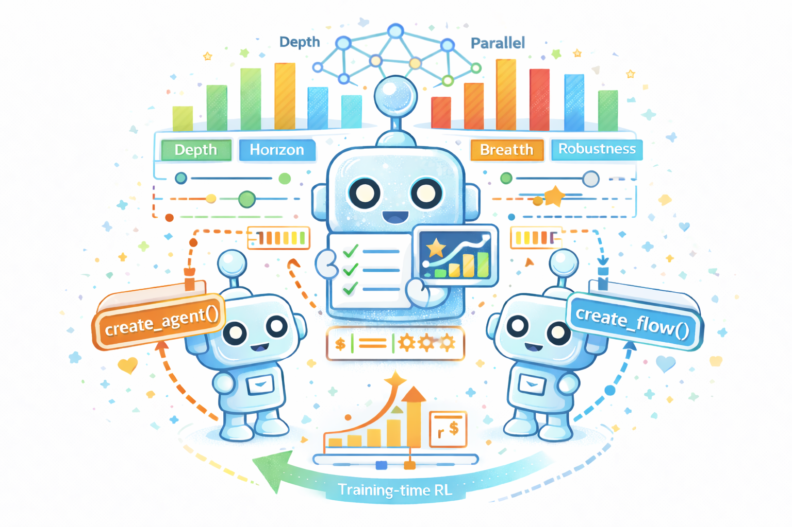

MAS-Orchestra
Understanding and Improving Multi-Agent Reasoning Through Holistic Orchestration and Controlled Benchmarks
A training-time framework that learns to build an entire multi-agent system at once using function-calling reinforcement learning, enabling global system-level reasoning instead of sequential code execution. Together with MASBENCH, a benchmark that measures task structure across five axes, our study shows when multi-agent systems truly outperform single-agent systems and delivers consistent gains on math, multi-hop QA, and search-based tasks.

Salesforce AI Research